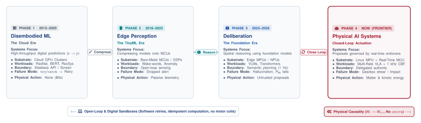
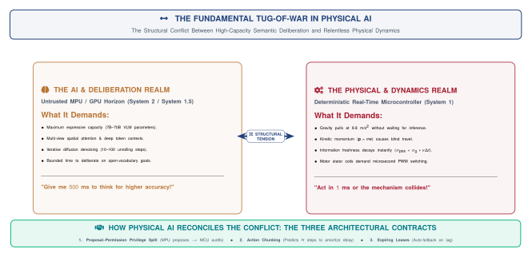
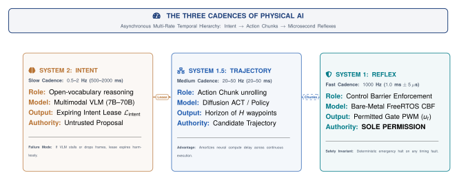
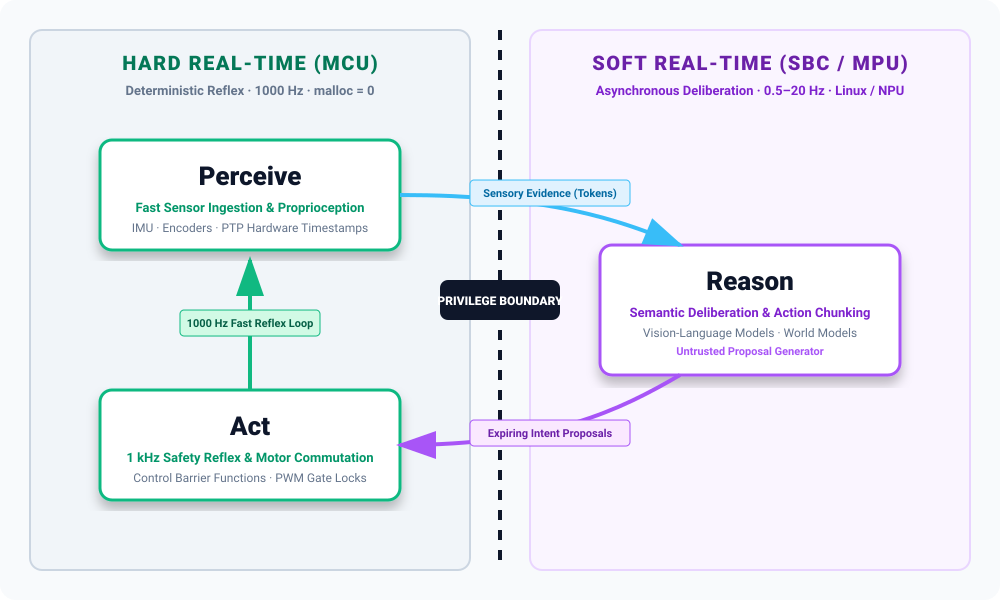
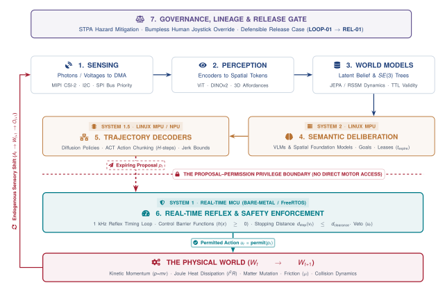
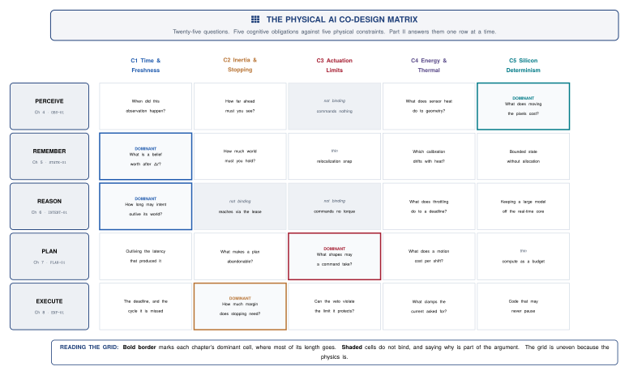

Machine Learning Systems That Sense and Act
Harvard University / ETH Zurich
ETH Zurich
ctrl+z kinetic momentum or Joule heat (\(I^2R\)).The Central Systems Question
“What must the surrounding system know, measure, enforce, preserve, and prove before an unverified learned proposal may produce a physical consequence?”

The evolution of intelligent computing: From Expert Systems to Cloud Deep Learning, TinyML, and the Physical AI Systems era.
An engineered system is defined as Physical AI if and only if it satisfies three universal criteria:
| Property | Computational & Physical Principle | Industrial Reality & Contrast |
|---|---|---|
| 1. Learned Foundation Component | High-capacity learned models (VLMs, Latent World Models, Diffusion Policies) | Replaces brittle hardcoded if-then rules with open-world generalization. |
| 2. Analog \(\longleftrightarrow\) Digital Boundary | Discrete software tensors and tokens directly govern continuous physical energy fluxes | Digital clock ticks command 3-phase inverter MOSFETs, motor coils, and fluid valves. |
| 3. Governed by Irreversible Physical Laws | Operates under strict physical conservation laws (\(E_k = \frac{1}{2}mv^2\), Joule heat \(I^2R\), friction) | Zero undo button: You cannot rewind a mechanical collision or motor winding thermal burnout. |
Every concept in this curriculum is anchored across Three Canonical Archetypes and a dedicated Desk Bench Twin:
The Desk Bench Twin: Arduino UNO Q Dual-Brain Kit
The laboratory hardware realization combining a Linux Application Processor (MPU) with a Real-Time Cortex-M4 Microcontroller (MCU).

The fundamental tug-of-war: The AI Deliberation Realm demands computational time and parameters, while the Physical Dynamics Realm demands microsecond determinism and fresh evidence.

Decoupling cognitive speeds across heterogeneous silicon: System 2 (1 Hz MPU), System 1.5 (20–50 Hz NPU), and System 1 (1000 Hz MCU).
malloc = 0.
The Perceive–Reason–Act architecture across the privilege boundary: Hard real-time low-latency reflex (1000 Hz) on the MCU, bridged to asynchronous semantic deliberation (0.5–20 Hz) on the SBC / Linux MPU.

The Dual-Brain Architecture: Isolating high-level stochastic AI proposals from deterministic bare-metal safety execution across lock-free shared SRAM.

The 20 Systems Friction Points: Crossing the 5 Cognitive Stages (the rows) against the 4 Physical Constraint Columns.
Every cell in this matrix represents an unyielding physical constraint where digital software assumptions collide with matter, energy, and silicon determinism.
malloc = 0). THE COMPLETE PHYSICAL AI SYSTEMS PARADIGM
MACHINE LEARNING (AI) EMBEDDED SYSTEMS (ECE) ROBOTICS & CONTROL (CPS)
┌─────────────────────────┐ ┌─────────────────────────┐ ┌─────────────────────────┐
│ • High-Capacity VLMs │ │ • Microsecond PTP Clocks│ │ • Rigid Body Dynamics │
│ • 3D Spatial Tokens │ │ • Zero-Copy DMA Buffers │ │ • Control Barrier Funcs │
│ • Diffusion Action Chunks││ • Lock-Free Shared SRAM │ │ • Kinetic Stopping Envs │
└────────────┬────────────┘ └────────────┬────────────┘ └────────────┬────────────┘
│ │ │
└───────────────────────────┼───────────────────────────┘
▼
PHYSICAL AI SYSTEMS
"Intelligence That Safely Senses and Acts in the Real World"physical.mlsysbook.aivjanapa@ethz.ch) & Dr. Andrea Mattia Garavagno